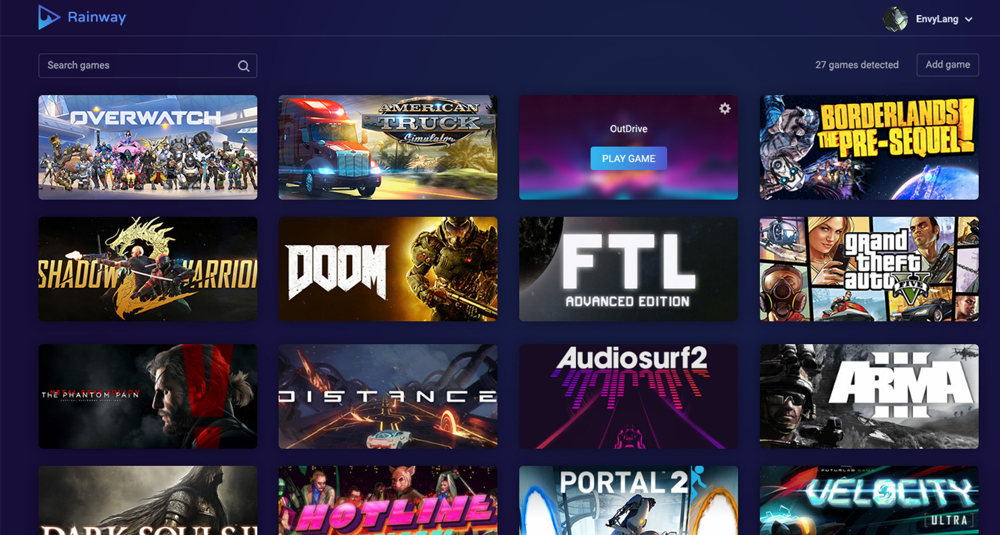
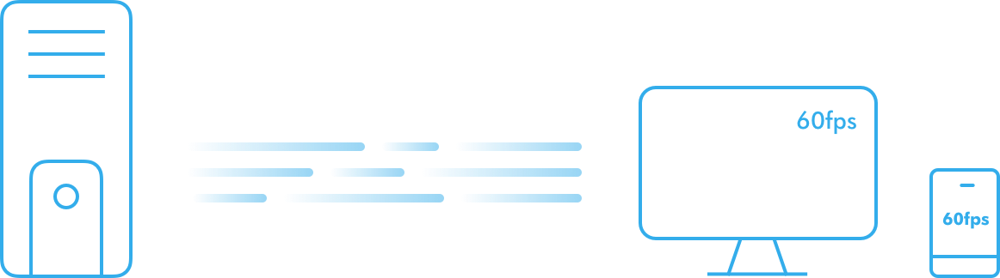

Streaming games have never been this easier! Rainway makes streaming games so easy even your grandma can now play games.
Rainway will always be completely free to use with no hidden cost. You can stream all your games, whenever you want, wherever you are, for as long as you want.
You don't need to type in an IP or forward ports. Rainway handles all of this for you. Play your game remotely on fully secured channels instantly.
Rainway works on all modern hardware. Intel, AMD, and Nvidia are all supported out of the box. You can play via the browser or via our many native applications.
Designed with speed in mind, Rainway is tuned to avoid impacting the performance of your game. Enjoy 60FPS streams with super low-latency gameplay.
Rainway has an overlay screenshot tool for you to take screenshots of your best gaming moments to share with friends, on social media, and upload them to Rainway's cloud imaging server.
You can customize Rainways stream settings to fit your needs. Control the frame rate, resolution and bit rate of your stream. You can even upscale and downscale any game.